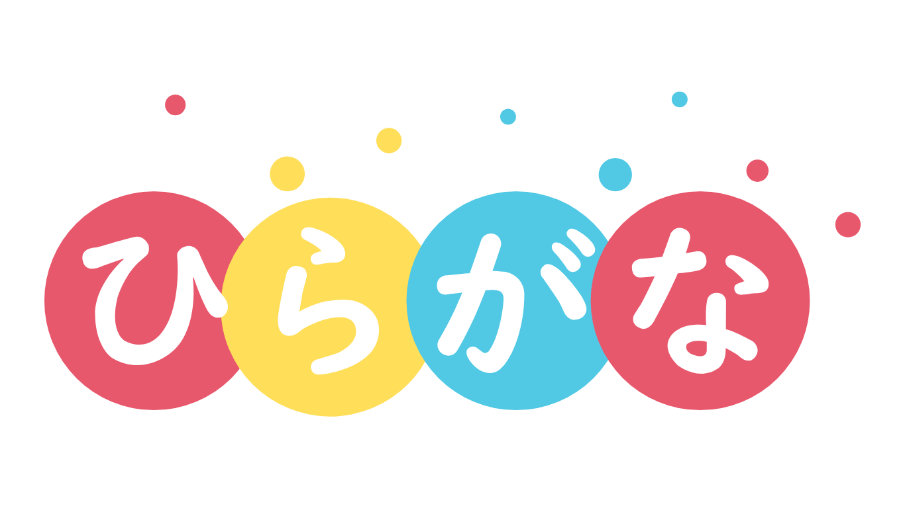
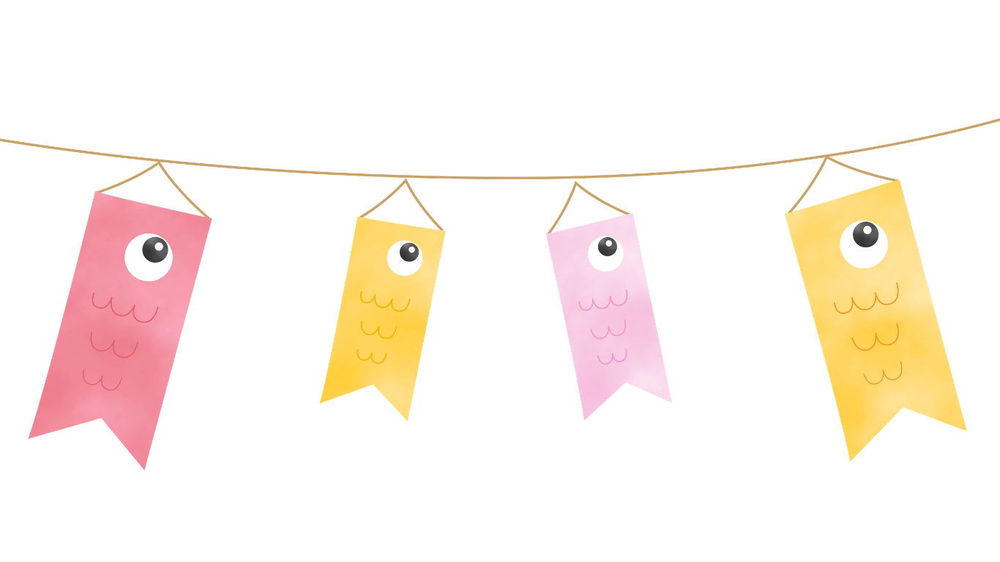

子どもたちは、会話、歌、絵本、日々の活動を通して、一日を日本語で過ごします。あわせて、ひらがなや文字に親しみ、読む力・書く力の基礎も育てていきます。

音楽、工作、遊び、読み聞かせ、季節の行事、外遊びや運動を通して、子どもたちは自然に日本文化に親しんでいきます。
本園では、ことばの力、文字や数への親しみ、社会性、自立心、問題解決力など、就学に向けた土台をバランスよく育てます。
そよかぜ幼稚園は、北バージニアの静かな住宅街にある、認可を受けたファミリーデイホームです。 夫婦である古澤理樹とコロル・アリシアが、娘のために、日本語と日本文化を大切にした豊かなプリスクール教育の場をつくりたいという思いから立ち上げました。 当園では、主担当の先生1名を中心に保育・教育を行うため、受け入れ人数は少人数に限られます。 2026–2027年度および2027–2028年度の運営を予定しています。
理樹は日本語を母語とし、ワシントン日本語継承センターにおいて、日本語の教室で指導経験があります。
現在、教員を募集しております。 詳しくは本ウェブサイト内の募集要項をご覧ください。